UTAC108e (Opus 5.5) · versão mobile (375 px) em primeiro lugar, como pedido. As pranchas interativas têm também 768 e 1024 px. Substitui a tentativa anterior (rejeitada por parecer genérica), que fica no histórico do git (d8c3e67).
#050818 (COR.bg) + a arena real do app (public/assets/backgrounds/background-*.webp: holofotes, confettis, néon laranja)..gut-glass-standard = rgba(13,18,53,.88), borda rgba(255,255,255,.10), raio 14 px, sem blur (MC82.1).#ff6b35 (COR.primary) só nos títulos de aba.#f5a623 (o único dourado proposto no 107a; o app ainda usa também #ff9500) para valores, nomes de prêmio, tempo e CTA; texto sobre dourado #0a0f1a (9,45:1).#e8f0fe (16:1) · corpo #c8d0f0 (12:1) · rótulos #8fa0d8 (7,2:1). Estados: verde #5ee0b4, vermelho #ff9a9d.tokens.css e mockup.js do 107a-front, o carrossel do MC99, a TabelaEspecial (Regra 2), os 5 estados do palpite (107e), o rótulo «Seu lance (em centavos)» (107d), o GUTO e a arte real das edições.Deslize para o lado. As capturas foram tiradas do HTML real com Chrome; cada uma passou o auditor do mockup.js (0 alvos < 48 px · 0 textos fora de vidro).
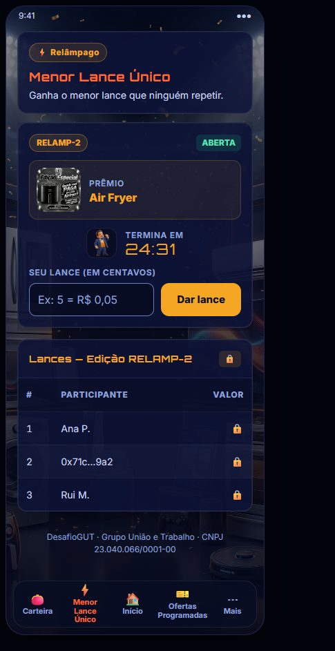
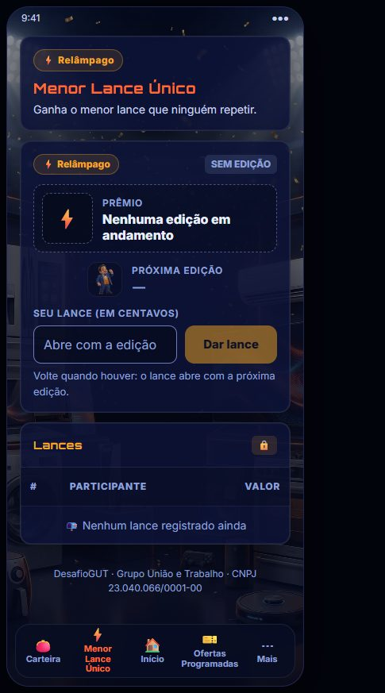
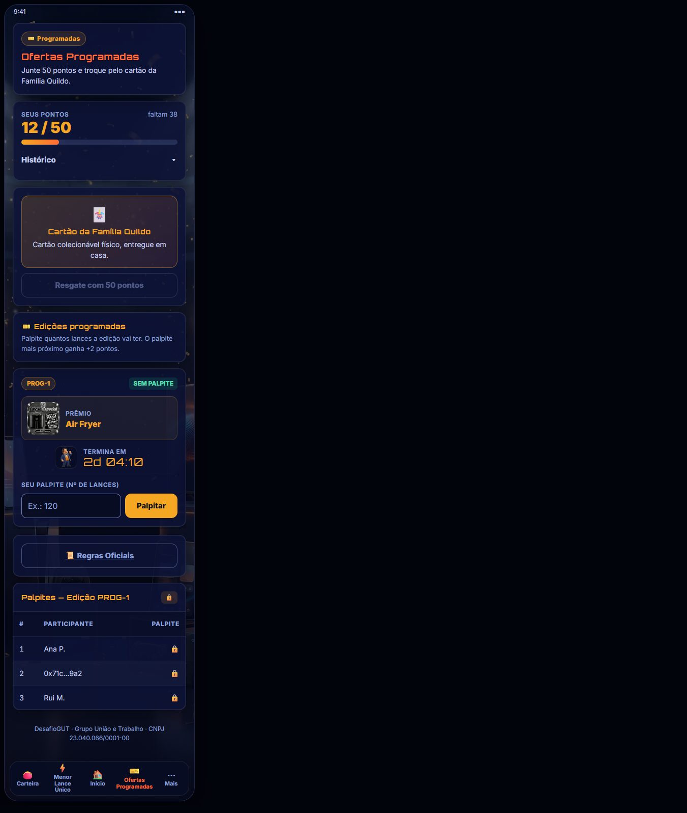
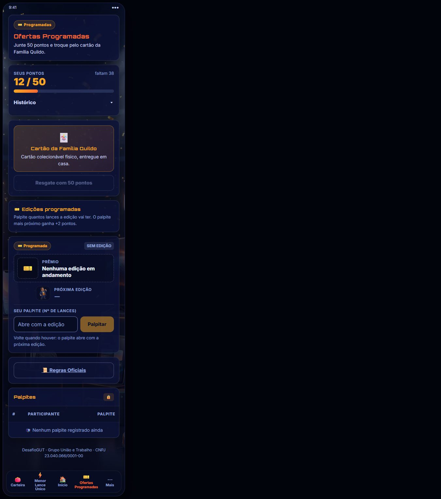
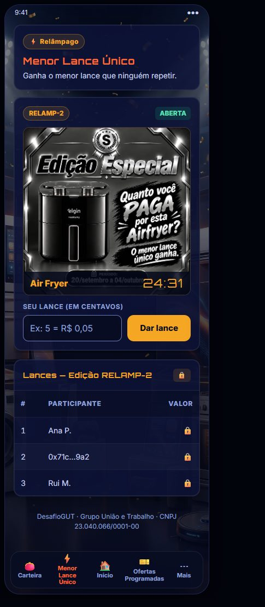
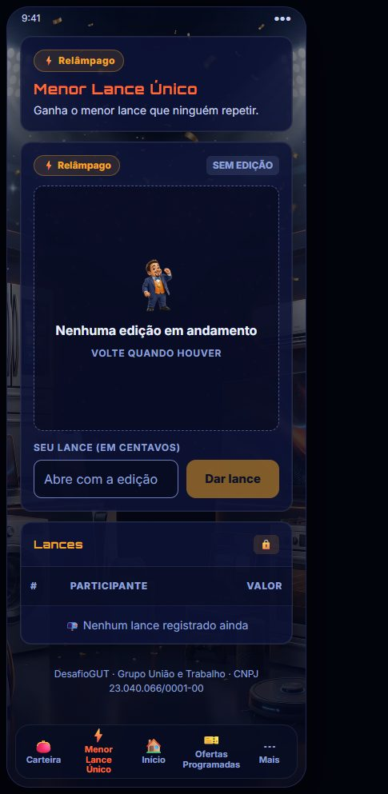
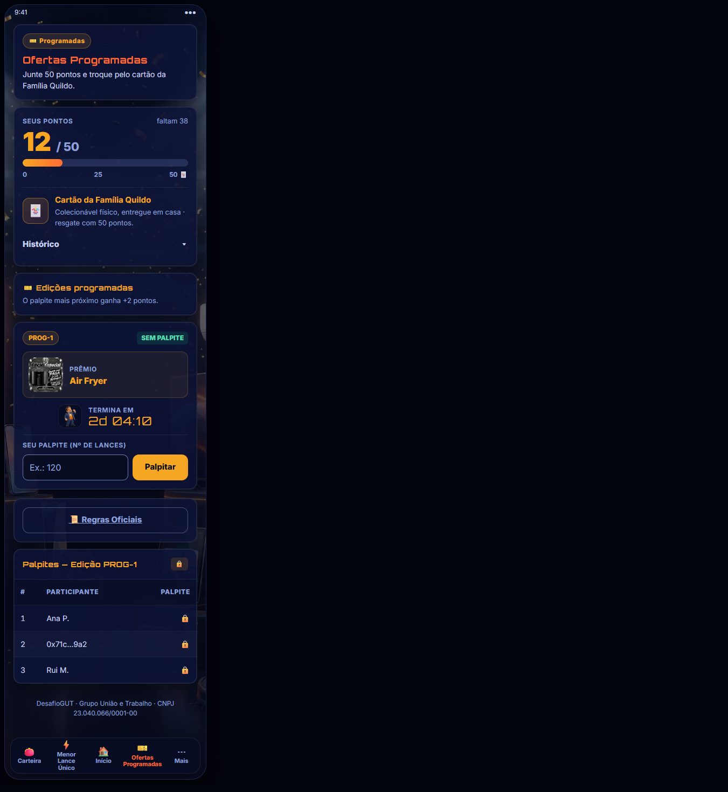
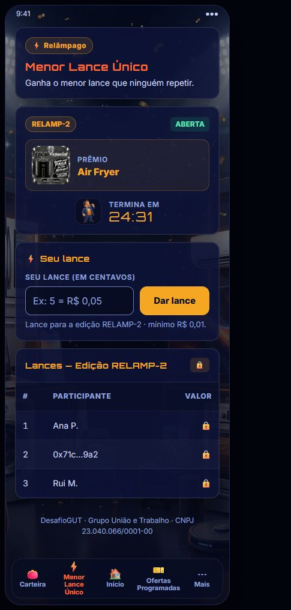
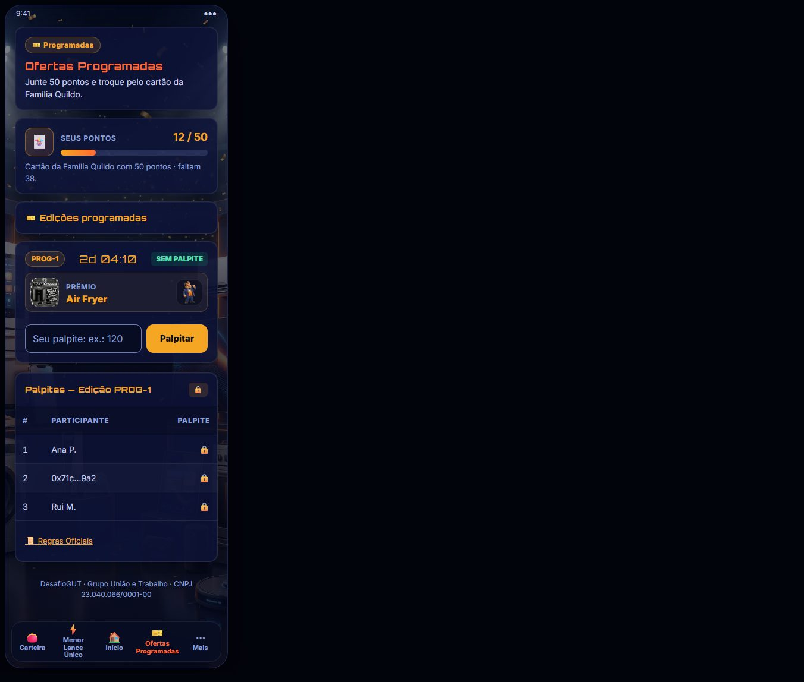
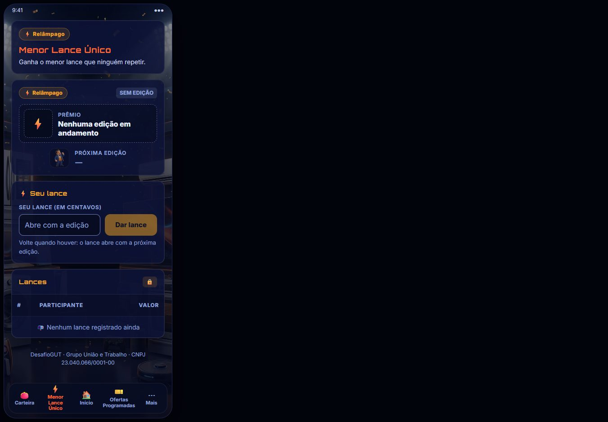
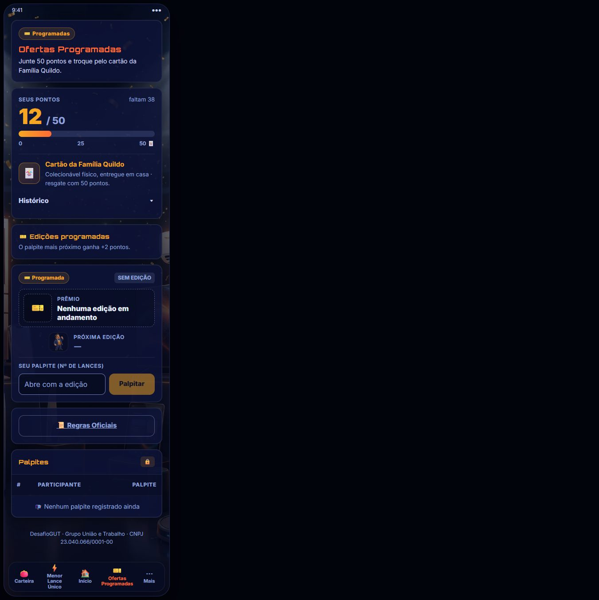
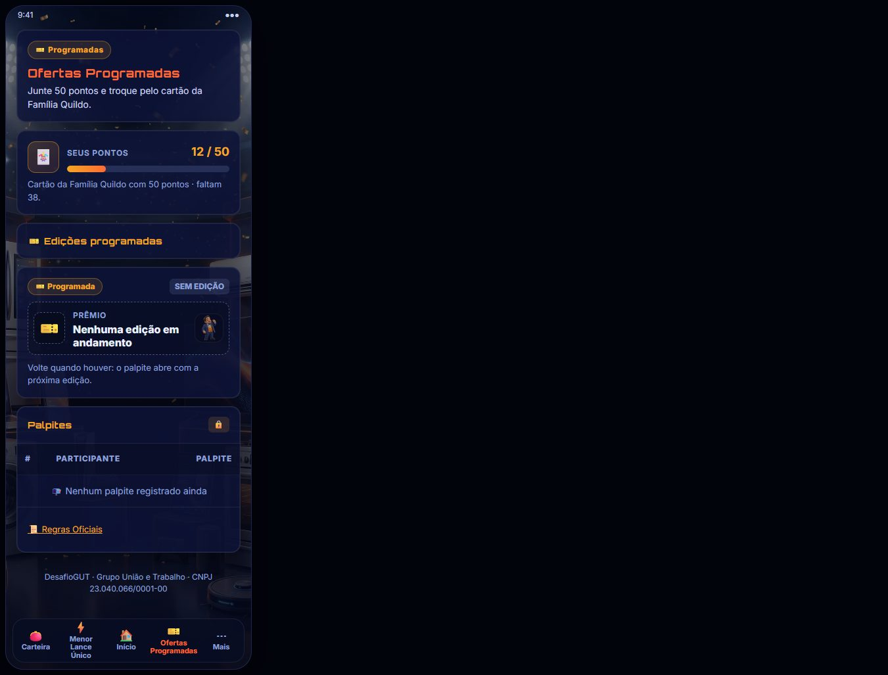
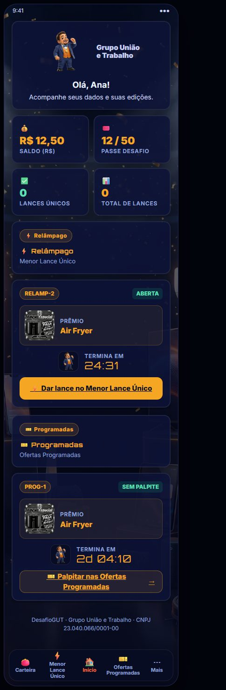
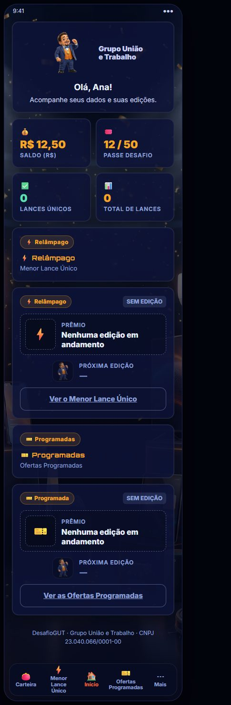
.slide e a OP .edicao: duas formas para a mesma coisa. Agora as duas abas (e o Início) usam o cartão .ed: id + estado → arte + prêmio → GUTO + tempo → ação. Só a ação muda: lance no MLC, palpite na OP.MLC A + OP A. São gémeas peça por peça (mesmo título, mesmo cartão, mesma tabela), ficam mais perto do que já foi aprovado no 107d/107e e são as mais baratas de implementar no 108e.1. Se quiser mais impacto comercial no MLC, a B é a alternativa forte: a arte da edição vira montra. Na OP, a B só compensa se o objectivo for empurrar o resgate do cartão.
Veja a galeria acima (mobile). Para mexer, abra uma prancha, escolha a variante, alterne «Com edição / Sem edição» e compare. Diga a letra que quer em cada aba (ex.: «MLC A, OP B»).